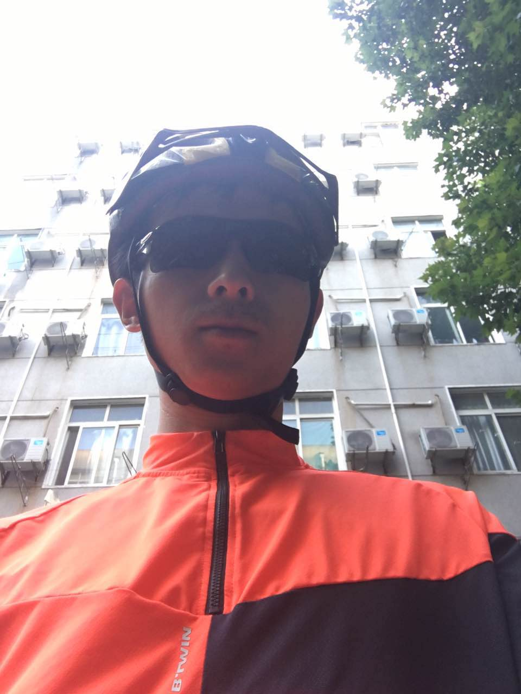

I’m Wei Lu. I received a Bachelor degree and a Ph.D in GIS from Wuhan University in the years 2012 and 2021. My academic background is primarily in Cartography and Geographical Information Science, especially in geometry algorithms and geovisualization. Now, I foucus on Topological Data Analysis(TDA) with geospatial data and topics. I like reading, running, and cycling. I have completed marathon race, and my PB is 4h 11m. I have made a bike travel along the hu-line, from Tengchong, Yunan to Heihe, Heilongjiang in 2020. This is the travel map: http://huline.xyz/
我是卢威。我分别在2012年和2021年从武汉大学获得GIS领域的理学学士学位和工学博士学位。我的学术背景主要在地图学和地理信息科学领域，尤其是几何算法和地理可视化。当前，我主要专注于面向地理空间数据的拓扑数据分析（TDA）理论和方法的研究，即利用代数拓扑的理论方法研究空间大数据问题。个人爱好阅读、跑步和骑行。曾参加过三次马拉松比赛，并完赛，最好成绩4小时11分。曾在2020年暑假期间，历时60日，完成沿胡焕庸线的长途骑行，从云南腾冲到黑龙江黑河，全程5800余公里。
My Résumé(简历): EN ⋅中文⋅ PDF.CN
Some of my papers: Google Scholar